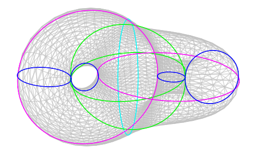

Uniformization of embedded surfaces
This page is associated with the monograph Uniformization of embedded surfaces by
Neil Strickland.
Outline of the project
Let $X\subset S^3$ be a smoothly embedded closed surface of genus
$g\gt 1$. As we will explain, $X$ automatically has a very rich and
rigid geometric structure. Indeed, $X$ inherits a Riemannian metric
from $S^3$, and after specifying some conventions we also obtain a
well-defined orientation. Now consider a point $x\in X$, and let
$T_xX$ denote the corresponding tangent space. Let $J_x\colon T_xX\to
T_xX$ be the anticlockwise rotation through $\pi/2$ (which is
meaningful given the metric and orientation). This depends smoothly
on $x$ and satisfies $J_x^2=-1$, so it gives an almost complex
structure on $X$. It has been known since the early twentieth century
that any almost complex structure on a manifold of real dimension two
integrates to give a genuine complex structure. Thus, $X$ can be
regarded as a compact Riemann surface. It is known that any compact
Riemann surface can be regarded as a projective algebraic variety over
$\mathbb{C}$, and also as a branched cover of the Riemann sphere.
Alternatively, as we have assumed that the genus is larger than one,
the universal cover of $X$ is conformally equivalent to the open unit
disc $\Delta$. This means that $X$ is conformally equivalent to the
quotient $\Delta/\Pi$ for some Fuchsian group $\Pi$.
To the best of our knowledge, the literature contains no examples
where a significant fraction of this structure can be made explicit.
This project is a partially successful attempt to provide such
an example, involving the surface
\[ EX^* = \{x\in S^3\; | \;
(3x_3^2-2)x_4+\sqrt{2}(x_1^2-x_2^2)x_3=0
\}
\]

Files
- The monograph itself is on the arxiv and also
here.
- There is also a large body of related
Maple
code and worksheets, together with graphics and data files
produced by that code.
- The arxiv page also has the code and worksheet files, uploaded as
ancilliary files with the main LaTeX document. However, readers may
find it more convenient to use this page instead of the arxiv page.
- As well as the discussion of the Maple code structure in the memoir,
there are some documentation files:
-
The code and worksheets can be downloaded as a
.zip file or as a
.tgz file. These files contain only a few of
the graphics generated by the code, and none of the data files. To start
using the code, one should open the file genus2.mw in the
worksheets directory.
- Alternatively, the above files can be obtained from the
GitHub repository.
- One can also download much larger files containing all graphics and data as
well as the code, in .zip format (300MB) or
.tgz format (190MB).